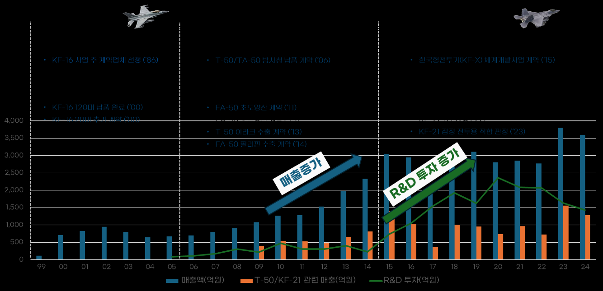
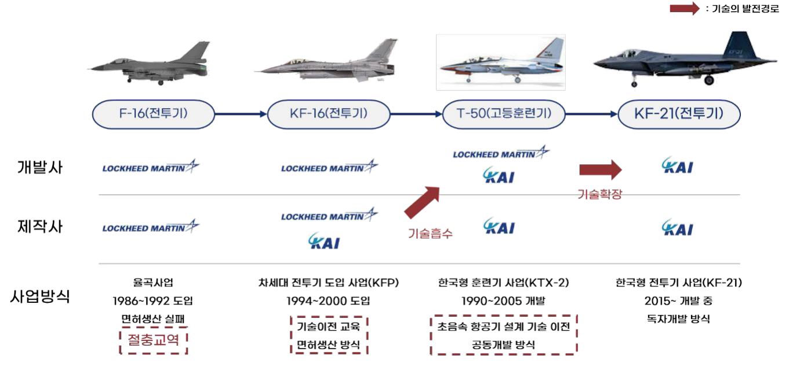
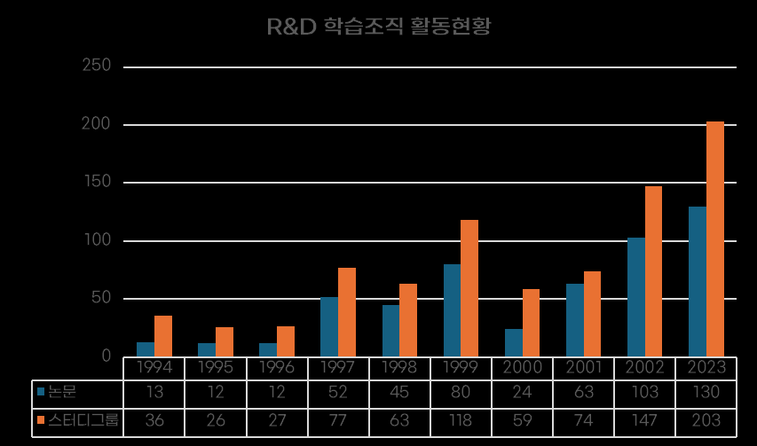
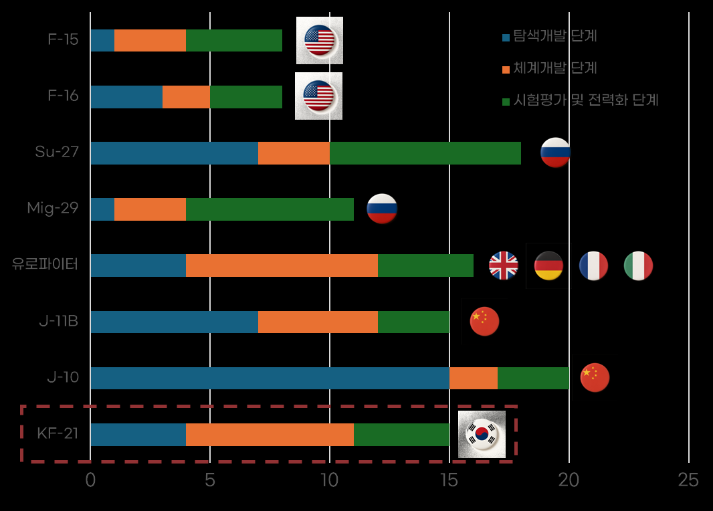

2021년 4월 9일, 경남 사천에서 한국이 독자 개발한 첫 번째이자 세계 8번째 독자 개발 초음속 전투기 KF-21 보라매 시제 1호기가 출고됐다. 1990년대까지 군용기 창정비 또는 조립생산에 의존하던 한국 항공산업이 약 40년 만에 전투기 독자개발을 수행하고 있는 것이다. 본 연구는 KF-16 면허생산과 T-50 공동개발을 거쳐 KF-21 독자개발에 이른 KAI의 발전 경로를 Cohen & Levinthal의 흡수역량(Absorptive Capacity) 이론으로 분석한다.
- KAI는 KF-16 면허생산과 T-50 공동개발을 바탕으로 제조·설계·체계종합 역량을 축적해 왔으며, 이를 기반으로 고난도 전투기인 KF-21 독자개발에 성공했다. 본 연구는 이러한 성과를 흡수역량(Absorptive Capacity) 관점에서 분석한다.
- KAI는 면허생산을 통해 생산 기반을 확보하고, 공동개발을 통해 항공전자·비행제어 등 핵심 기술을 내재화하며 외부 지식을 효과적으로 흡수·재구성해 왔다.
- 그 결과 KF-21 단계에서는 고부가가치 기술을 자체 개발할 수 있는 기술자립 역량을 확보하였다.
- KAI의 발전 경로를 '흡수 기반 마련 → 흡수역량 강화 → 역량 확장'으로 제시하며, 복합제품시스템(CoPS) 산업에서 후발 기업 또는 국가가 기술자립을 이루기 위한 전략적 시사점을 도출한다.
제1장. 서론
KF-21은 최대 속도 마하 1.81, 전투행동반경 2,900km, 7.7톤의 무장 탑재 능력을 갖춘 4.5세대 전투기로, 2022년 7월 첫 시험비행에 성공한 이후 2026년 전력화를 목표로 시험이 진행 중이다. 총 8조 원이 넘는 예산이 투입된 대규모 국가 전략사업으로 방위사업청이 주관하고 KAI가 주계약자로서 체계종합을 담당한다. 2024년 말에는 체계개발 종료 전임에도 2023년 5월 획득한 '잠정 전투용 적합' 판정을 토대로 40대 규모의 Block-I 1차 양산 계약을 체결했다. 특히 KAI는 전투기 독자개발 경험이 전무한 상태에서 체계개발을 시작해 사업 착수 후 약 11년 만에 시제기 제작과 초도 비행에 성공했는데, 이는 해외 주요 4.5세대 전투기 개발사들이 15~20년 이상 소요한 사례와 비교할 때 경쟁력 있는 성과다.
제2장. 이론적 배경
2.1~2.3 무기체계 획득 방법과 절충교역
전투기 산업은 다수의 하위 시스템과 구성품이 상호 의존적으로 통합되어야 하는 대표적인 복합제품시스템(CoPS: Complex Product Systems) 산업이다. 한국이 KF-21 이전에 고정익 항공무기체계를 획득한 방식은 세 가지였다. 1986년 F-16 도입 같은 구매, 1994년 F-16 절충교역에 따른 KF-16 면허생산 같은 기술협력생산, 그리고 설계부터 체계종합·시험평가까지 국내가 주도적으로 참여한 T-50 체계연구개발이다. 절충교역(Offset)은 무기체계를 해외에서 도입할 때 구매국이 기술이전, 생산 참여, 부품 국산화 등 산업적·기술적 이익을 확보하기 위해 체결하는 상호보완적 협력 조치다.
2.4 혁신이론 — 흡수역량
흡수역량은 기업이 외부에서 들어오는 지식을 인지하고, 획득하고, 소화하고, 내부에서 재구성하며, 최종적으로 활용해 혁신을 만들어내는 능력을 의미한다. Cohen과 Levinthal이 제시한 이 개념의 핵심 특성은 경험이 누적될수록 학습 능력이 강화되는 누적성, 과거 지식이 새 지식 흡수에 영향을 주는 경로 의존성, 그리고 R&D 투자·인력 교육·조직 구조 같은 조직적 학습 요소다. 흡수역량은 획득–동화–변형–활용의 네 단계로 작동한다.
제3장. 연구 가설
본 연구는 KAI가 면허생산에서 공동개발을 거쳐 독자개발로 이어지는 과정에서 어떻게 기술자립을 실현했는지를 규명한다. 핵심 가설은 전투기 개발 역량의 성장이 단일 사업의 결과가 아니라 수십 년간 축적된 기술흡수 경험과 조직적 학습의 산물이며, 나아가 국가 정책·산업 생태계·기술협력·인력 시스템이 결합된 결과라는 것이다. 이로부터 두 가지 연구질문을 도출했다. 첫째, 전투기 독자개발을 성공시킨 요인은 무엇인가. 둘째, 전투기와 같은 국내 첨단산업 발전을 위한 시사점은 무엇인가.
분석은 세 단계로 구성된다. 사례 분석에서는 KF-16·T-50·KF-21 세 사업을 중심으로 기술축적의 흐름을 검토하고, 성공요인 분석에서는 개발 역량의 성숙 과정을 흡수 기반 마련·흡수역량 강화·역량 확장의 세 구조로 분류해 살핀다. 마지막으로 성과 분석에서는 이러한 기술축적이 일자리·수출 등 경제적 성과와 개발 기간 단축 등 산업적 성과로 이어진 측면을 평가한다.
제4장. 사례 분석
KAI는 1999년 삼성항공, 대우중공업, 현대우주항공이 통합되며 설립된 항공우주 체계종합기업으로, 약 900여 대 이상의 항공기를 제작·납품해왔다. 2025년 2분기 수주 실적에서는 KF-21 최초양산 잔여 물량 계약 등 국내 사업 부문에서만 2조원이 넘는 규모(전체 수주액 3조 1천여억원의 약 65%)를 기록해 전투기 분야가 수주의 중심축임을 보여준다. KAI의 타임라인은 KF-16 면허생산 중심의 태동기(1980년대~2005년), T-50 공동개발 중심의 성장기(2006~2014년), KF-21 독자개발 중심의 완성기(2015년~현재)로 구분된다.

4.3 주요 사업 분석
KF-16 사업(1983~1994년 추진)은 대한민국 최초의 첨단 전투기 도입 사업으로, FMS 완제기 12대 도입, 국내 조립 36대, 국산화 면허생산 72대 등 총 120대를 확보했다. 항공기 조립공정 기술·품질보증 체계·시험평가 능력 등 제조 기반 기술을 습득했으나 설계 기술과 핵심 소프트웨어는 이전되지 않았다. T-50 개발 사업은 KF-16 면허생산의 절충교역 원칙으로 시작된 한국 최초의 초음속 전투기 개발 사례로, KAI가 체계종합·동체설계·최종조립을 담당하고 록히드마틴이 공동 체계개발을 지원하는 구조에서 항공전자 통합, 비행제어 시스템 개발 등 핵심 공정 기술을 습득했다. KF-21은 한국이 처음으로 독자 설계한 4.5세대 전투기로, 항공전자·비행제어 소프트웨어, 3차원 동시공학 기반 설계체계, 무장통합 능력 등 핵심기술을 국내에서 직접 개발했다.

제5장. 성공요인 분석
5.1 흡수 기반 마련
정부의 정책적 리더십이 출발점이었다. 냉전 종식기 미국의 자주국방 요구라는 정치적 환경 속에서, 수조 원의 예산이 필요한 초대형 사업의 개발비를 정부가 지원하고 장기간의 안정적인 수요를 약속함으로써 기업이 위험 부담을 완화하고 기술 학습에 집중할 수 있는 기반을 제공했다. 1990년대 후반까지 삼성항공·대우중공업·현대우주항공이 경쟁하며 중복 투자하던 구조를 해소하기 위해 정부는 '항공통합법인 설립 지원대책'을 추진했고, 1999년 3사의 항공 부문이 통합되어 KAI가 출범했다. 통합은 인력·설비·개발 역량을 집중시켰고, 해외 기업과의 협상에서 한국 전체를 대표하는 단일 창구가 생기며 협상력이 크게 강화됐다.
기술 습득 경로로는 절충교역을 활용한 참여형 기술습득 구조(KF-16)와 협력형 기술습득 구조(T-50)를 채택했다. T-50에서 KAI는 록히드마틴과 1:1 엔지니어 팀(KAI-LM 1:1 Engineer Team)을 구성해 이상 현상 발생 시 즉각 대응하며 암묵적인 설계 지식까지 흡수했고, 미국 현지에 구매 사무소와 Chief Engineer Office를 설립해 147개에 달하는 해외 협력업체를 직접 관리하며 글로벌 소싱 역량을 확보했다. 무엇보다 실무진과 경영진의 집요한 협상을 통해 항공기의 '뇌'에 해당하는 비행제어 비행운용 프로그램(Flight Control OFP)을 획득한 것이 결정적 성과였다.
5.2 흡수역량 강화
KF-16 단계에서 엔지니어들은 원제작사 현지에서 생산공정을 관찰하고 국내 실습을 병행하며 복합재 가공, 전자빔 용접 등 약 1,600여 개의 생산기술을 축적했다. T-50 단계에서는 흡수 지식의 내재화가 본격화됐다. 동일 관심분야 엔지니어들의 연구조직을 활성화하고 기술 자료의 추적·공유·문서화를 정례화했으며, R&D 학습조직의 논문·스터디 활동은 1994년 약 20건 수준에서 2003년 70건 이상, 최근에는 연간 200건을 넘어섰다. 또한 TAMS(기술획득관리 전산시스템)를 도입해 KAI와 정부, 협력업체 간에 실시간으로 기술 자료를 주고받고 기술획득 현황을 추적할 수 있게 했다. ADD(국방과학연구소)가 KTX-2 탐색개발을 통해 축적한 공기역학·비행제어·복합재 구조 등 선행 기술이 체계개발 단계에서 KAI로 이전되며 연구기관–산업체 협력 모델이 완성됐다.

5.3 역량 확장
KF-21 개발에는 3차원 동시공학 기반의 COMOK 체계를 적용해 설계–해석–제작 준비를 통합 검증했다. 설계 엔지니어가 모델을 수정하면 구조 해석팀이 즉시 강도·안전성을 검토하고 생산팀이 조립 순서를 동시에 확인하는 방식으로, 과거 몇 달이 걸리던 설계 오류 수정을 디지털 목업 환경에서 몇 시간 만에 검증할 수 있게 됐다. 소프트웨어 분야에서는 T-50 당시 블랙박스 형태로만 제공받아 내부 알고리즘을 이해하거나 수정할 수 없었던 비행제어 법칙을, T-50 개발 과정에서 축적한 비행 시험 데이터와 시뮬레이션 결과를 바탕으로 독자 개발하는 데 성공했다. 임무 컴퓨터 역시 KF-21에서 완전히 국산화됐으며, 2023년 11월 KAI는 항공기개발 항공전자 분야에서 CMMI 2.2 버전의 최고등급인 레벨5 인증을 획득했다.
5.4 성과 분석
KF-21 개발은 700개가 넘는 국내 협력업체가 참여한 산업 생태계의 승리다. 정부와 연구기관의 분석에 따르면 KF-21 개발과 양산은 약 24조 원의 생산 유발 효과와 약 11만 명의 고용 창출 효과가 기대된다. 개발 기간 측면에서도 KF-21은 탐색개발부터 전력화까지 약 15년이 소요될 것으로 예상되는데, 이는 항공 선진국들의 평균(약 13.7년)과 손색없는 수준이며, 유로파이터(약 16년)나 중국 J-10(약 20년)보다 짧다.

유사 사례와의 비교는 한국 경로의 차별성을 보여준다. 브라질 AMX(1978-1989)는 이탈리아가 핵심 설계와 시스템 통합을 주도하고 브라질은 생산에 국한되어, 사업 종료 후 독자 전투기 개발로 이어지지 못했다. 일본 F-2(1987-2000)는 기체 확대 설계와 AESA 레이더 등에서 자율성을 확보했으나 엔진·비행제어 소프트웨어·임무컴퓨터를 미국에 의존했고, 이후 독자 개발 대신 영국·이탈리아와의 국제 공동개발(GCAP)로 전환했다. 인도 TEJAS(1983-2015)는 충분한 기술 기반 없이 독자 개발을 시도해 개발 기간이 33년으로 장기화됐고 성능 목표 미달 문제가 반복됐다. 반면 한국은 KF-16 면허생산(11년)과 T-50 공동개발(9년)을 통해 약 20년간 단계적으로 역량을 축적한 후 독자개발에 착수해, 개발 리스크를 최소화하고 기술 내재화를 촉진했다.
제6장. 결론 및 시사점
KF-21 독자개발 성공은 체계적인 흡수역량 강화 전략이 장기간에 걸쳐 작동한 결과다. 흡수 기반 마련 단계에서 항공산업 일원화와 절충교역 활용으로 외부 지식을 획득(Acquisition)할 수 있는 환경이 조성됐고, 흡수역량 강화 단계에서 KF-16의 제조·품질관리 경험이 T-50의 설계·체계종합 기술을 더 빠르게 소화(Assimilation)하는 기반이 됐으며, 역량 확장 단계에서 3차원 동시공학 설계 환경과 독자적 비행제어 법칙 개발 등 학습한 지식을 새로운 기술로 창출(Exploitation)하는 능력이 확보됐다.
- 기술자립은 단계적 학습의 산물: KF-16(제조 역량)–T-50(설계·체계종합 역량)–KF-21(완전 자립)로 이어지는 약 30년간의 단계적 학습이 핵심이다. 인도 TEJAS의 실패는 충분한 기반 없이 독자 개발을 시도한 결과로, 반도체·배터리·수소·우주항공 등 첨단산업에서도 단계적 기술 학습 경로의 설계가 필요하다.
- 조직의 체계적 학습 메커니즘: KAI의 성공은 우수한 개인의 집합이 아니라 R&D 학습조직, TAMS 기술자료 공유 체계, 1:1 엔지니어 팀 등 조직 차원의 학습 인프라가 뒷받침된 결과다. 기술 도입 시 조직 내부의 학습 체계를 동시에 구축해야 한다.
- 기술협력의 구조 설계: 체계종합 주도권 확보, 147개 해외 협력업체 직접 관리, 비행제어 소프트웨어 협상 획득처럼 계약 구조·역할 분담·의사결정권이 흡수역량 강화에 결정적 영향을 미친다.
- 정부는 기반 조성, 흡수는 기업의 몫: 제도가 기회를 열어줄 수는 있지만, 기술을 경쟁력으로 전환하는 주체는 결국 기업이다.
- 핵심 기술의 내재화: KF-21이 독자 전투기로 평가받는 이유는 국내 조립 때문이 아니라 비행제어 법칙, 항공전자 시스템, 임무컴퓨터 등 '두뇌'에 해당하는 소프트웨어와 시스템 통합 기술을 자체 개발했기 때문이다.